broadcast

loading
loading
loading
loading
LAGU (v0.2) is a generative sound installation that makes music forever. It is designed to
make its own
choices without any human input.
How it works: Each of the four layers has a randomly selected
instrument with
randomly
selected properties (note duration, reverb, etc). The layers will decay overtime until they die (silence). After
death, the layer is reborn with a new random instrument and properties. Within each layer, the individual notes
also decay. When a note volume reaches 0, a new random note is assigned within the current scale (red lights).
Every 15 minutes the scale changes. This is an alpha release with only 13 instruments (bugs
and clipping may occur). In the future, LAGU will be controlled by local weather conditions.
Powered by
Tone.js and p5.js